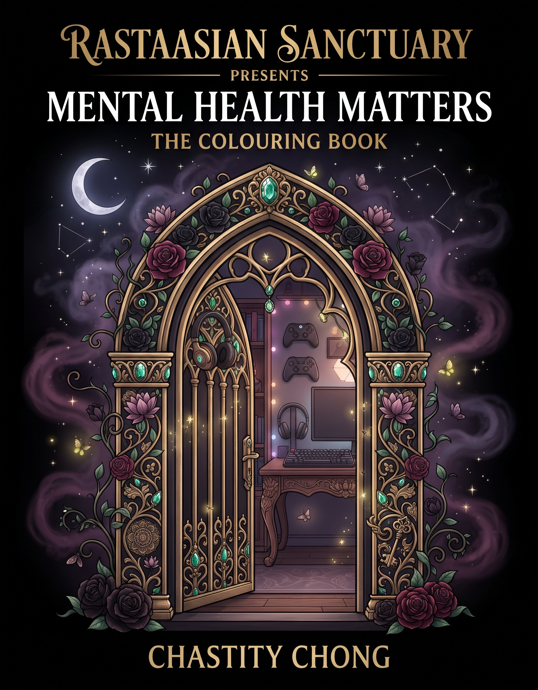
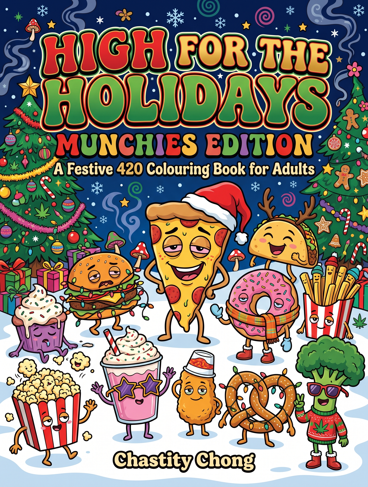
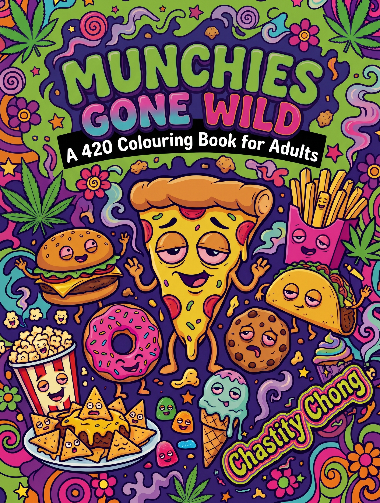
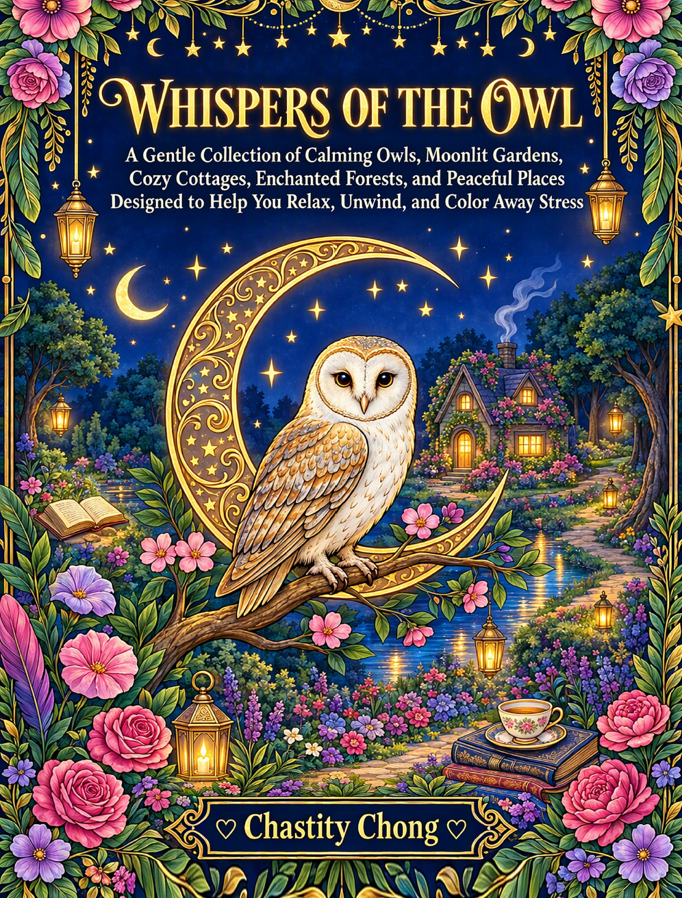
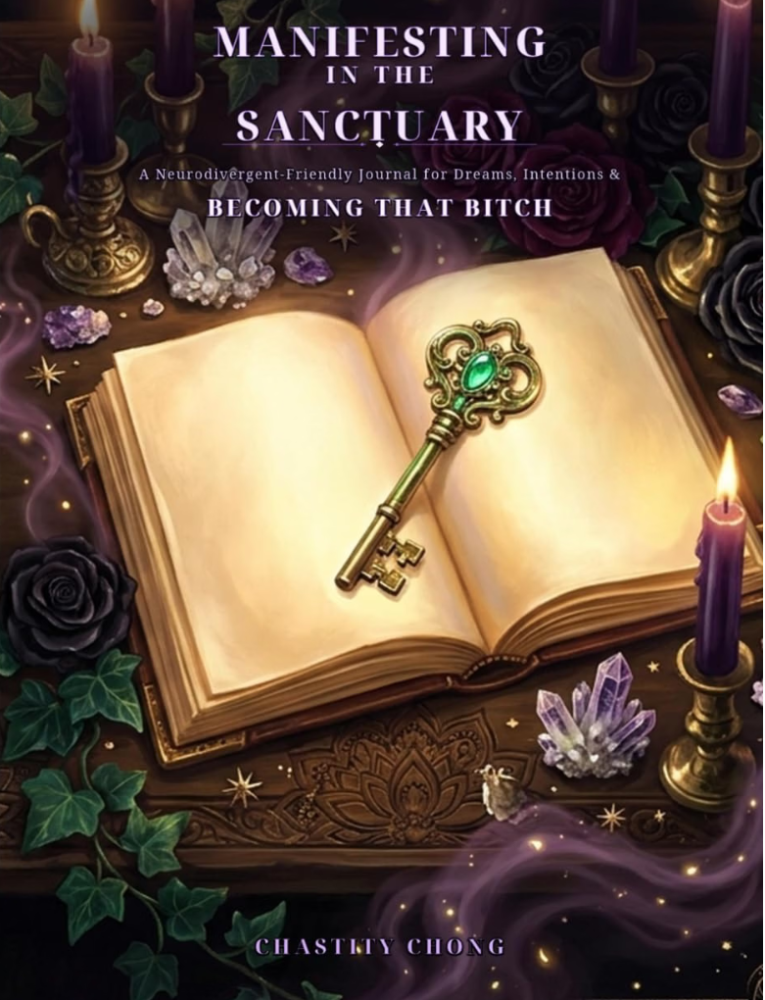

A quiet shelf in the Sanctuary. Pull up a chair, dim the lights,
and step into the stories.

RastaAsian Sanctuary Presents: Mental Health Matters
Adult colouring book · by Chastity Chong
Step inside RastaAsian Sanctuary Presents: Mental Health Matters,
a meaningful adult colouring journey created to celebrate
neurodivergent minds, mental health, healing, and self-expression.
Get it on Amazon
Also on Amazon:
Canada
·
United Kingdom
·
Germany
·
France
·
Spain
·
Italy
·
Australia
·
Japan

High For The Holidays: Munchies Edition
Adult colouring book · The Munchies Adventures · 56 pages · Oct 2026
High For The Holidays: Munchies Edition is a hilarious
stoner-inspired adult colouring book that sends the Munchies
crew headfirst into holiday chaos. Pizza, Donut, Broccoli,
Pretzel, Taco, Hot Cocoa, Gingerbread, and the rest of the gang
take on everything the season throws their way.
Get it on Amazon

Munchies Gone Wild
A 420 colouring book for adults · The Munchies Adventures · by Chastity Chong
Welcome to the Munchieverse, where the snacks have personalities,
the adventures get ridiculous, and the munchies have officially
gone WILD! Munchies Gone Wild is a hilarious 420-themed adult
colouring book that transforms your favourite snacks into an
unforgettable cast of quirky characters.
Get it on Amazon

RastaAsian Sanctuary Presents: Whispers of the Owl
Adult colouring book · by Chastity Chong
Welcome to
RastaAsian Sanctuary Presents: Whispers of the Owl,
a cozy coloring journey created for quiet moments, creative
escapes, and the days when you simply need to slow everything
down. Follow a wise little owl and a curious cat through a
whimsical world of enchanted gardens, cozy corners, woodland
adventures, moonlit moments, and peaceful places waiting for
your color and imagination.
Get it on Amazon Canada

Manifesting In The Sanctuary
A Neurodivergent-Friendly Journal for Dreams, Intentions &
Becoming That Bitch · 120-page guided manifestation journal · by Chastity Chong
Manifestation without the toxic positivity, impossible routines,
or pressure to pretend everything is fine.
Manifesting in the Sanctuary: A Neurodivergent-Friendly Journal
for Dreams, Intentions & Becoming That Bitch
is a 120-page guided manifestation journal for anyone who wants
to dream bigger while staying grounded in real life.
Inside the Sanctuary, manifestation isn't about sitting around
waiting for the universe to magically deliver everything you want.
It's about reflection, intention, action, noticing what is changing,
and taking the next step your actual brain and energy can handle.
Start anywhere. Skip what doesn't serve you. Change your mind.
Come back when you're ready.
Get it on Amazon Canada